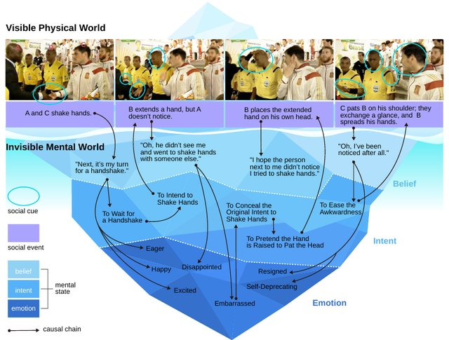

Read the Room: Video Social Reasoning with Mental-Physical Causal Chains
International Conference on Learning Representations (ICLR), 2026
My role: built the training-data pipeline, ran baseline evaluations, and fine-tuned Qwen2-VL-7B on the data.
"Read the room", or the ability to infer others' mental states from subtle social cues, is a hallmark of human social intelligence, but remains a major challenge for current AI systems. Existing social reasoning datasets are limited in complexity, scale, and coverage of mental states, falling short of the rich causal dynamics found in real-life interactions. In this work, we introduce R3-Bench, an evaluation benchmark with fine-grained annotations of belief, intent, desire, emotion, and their causal chains in complex scenarios. Furthermore, we introduce R3-FDT, a large-scale training set generated through a novel automated pipeline with the same chain structure. We conduct a comprehensive evaluation of state-of-the-art (SOTA) large vision-language models (LVLMs) on R3-Bench, revealing substantial deficiencies in consistent multi-step social reasoning. We also fine-tune a 7B model on R3-FDT, achieving notable improvements across multiple relevant benchmarks.